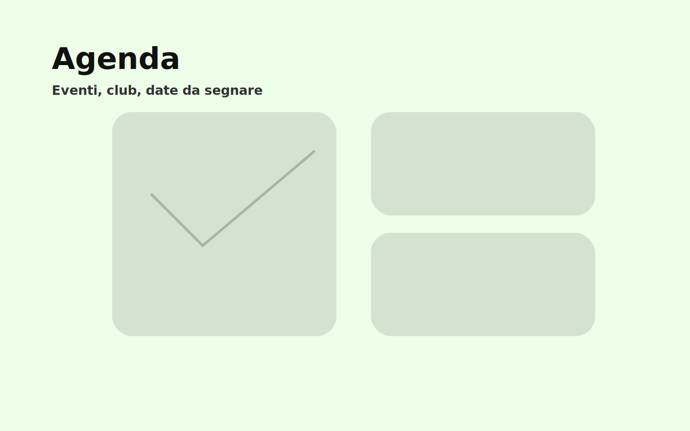

Notizie
10/01/2026
Nuovi club pomeridiani: come iscriversi (senza stress)
Dal club di fotografia al laboratorio di podcast: ecco cosa parte questo mese e dove trovare i moduli.
Nuovi club in partenza? Sì, e sono più di quanto pensi. Quest’anno la scuola sta sperimentando attività pomeridiane a iscrizione libera (con posti limitati).
Ecco alcuni esempi (demo):
- Club di fotografia
- Laboratorio di podcast
- Debate e public speaking
- Sport “leggero” (corsa, mobility)
Per iscriversi: chiedi in segreteria o al tuo coordinatore di classe il modulo. Compilalo e consegnalo entro la data indicata.
Tip zine: se sei indecisə, iscriviti “in prova” (quando possibile). Meglio provare 2 settimane che rimuginare 2 mesi.
Ricorda: non tutto deve diventare “performance”. A volte serve solo un posto dove fare qualcosa che ti piace.